超文本传输协议（HTTP，HyperText Transfer Protocol)是互联网上应用最为广泛的一种网络协议。
HTTP的作用就是指导浏览器和服务器如何进行沟通。那么又是如何实现沟通的呢？
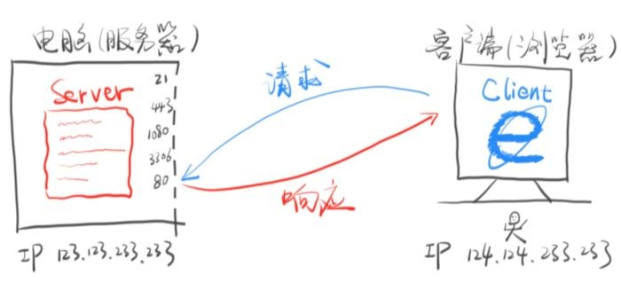
如上图所示:客户端的浏览器发起请求--->服务器在其80端口接收到请求之后，然后根据客户端的请求发出对应响应返回内容,将相关数据发送给客户端---->浏览器负责下载响应内容;
tips:
80端口专门用来服务HTTP;
如下图这样的一个URL,构成如下:
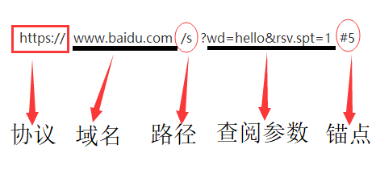
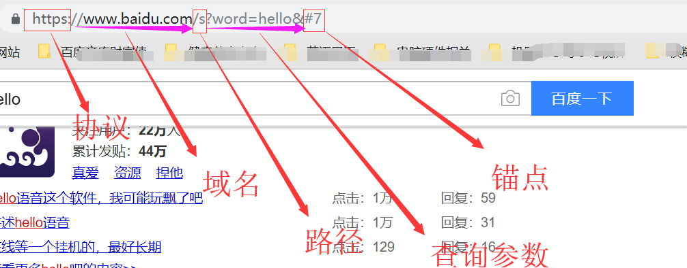
1.发送请求的格式:
第一部分: 动词 路径 协议/版本
第二部分: key1 : value1
第二部分：key2 : value2
第二部分：key3 : value3
第二部分：Content-Type : application / x-www-form-urlencoded (我要上传的数据内容的类型和格式)
第二部分： Content-Length：10 (我要上传的数据的长度)
第二部分：HOST：www.baidu.com //目标域名
第二部分：User-Agent : Curl/7.54.0 //你通过哪个软件(工具发起请求的)
第三部分：
第四部分：要上传的数据
/;（路径必须以/开头）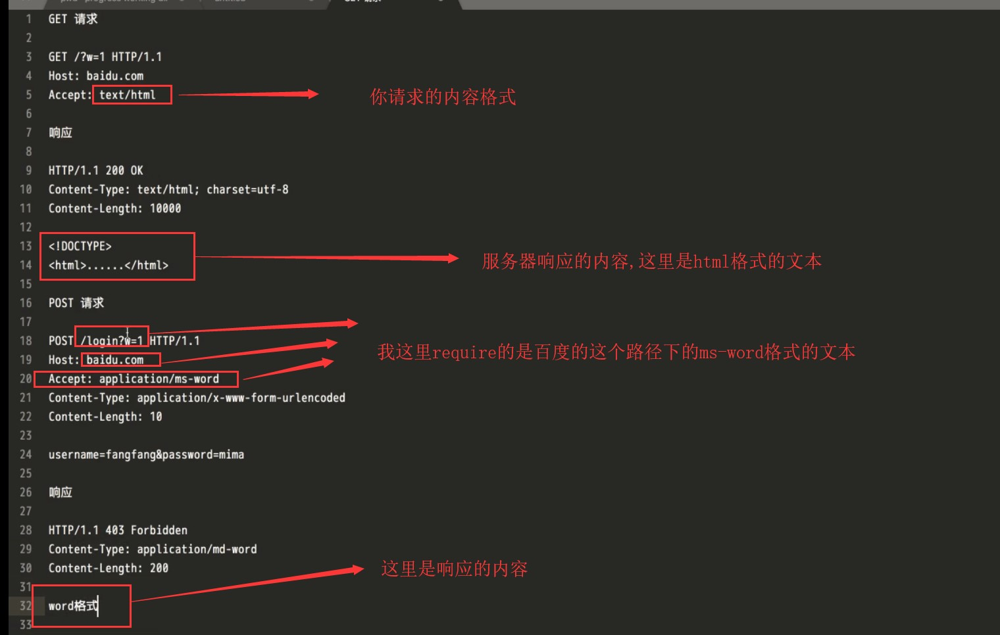
测试1：
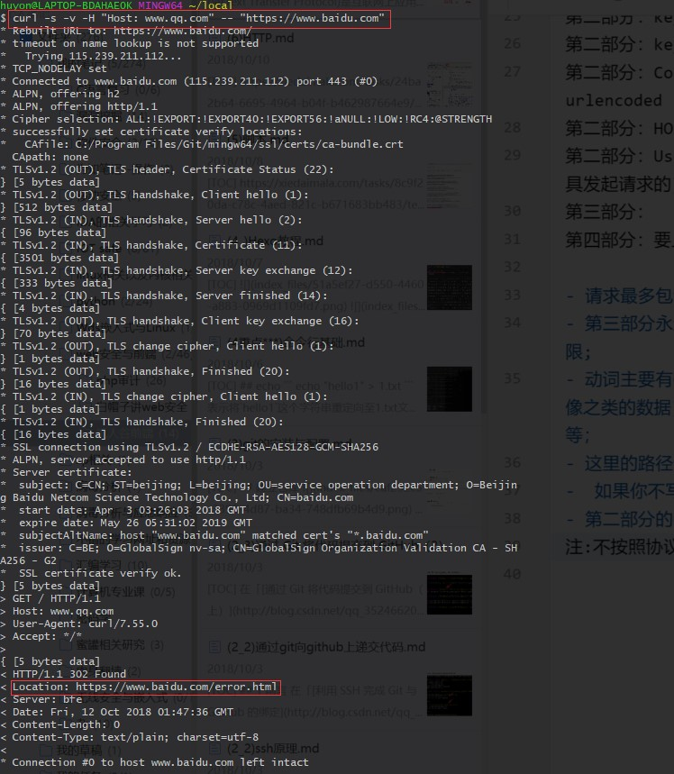
curl -s -v -H "Host: www.qq.com" -- "https://www.baidu.com"这句话的意思是:对百度服务器说，有没有qq.com的页面，这里会出错!
测试2:
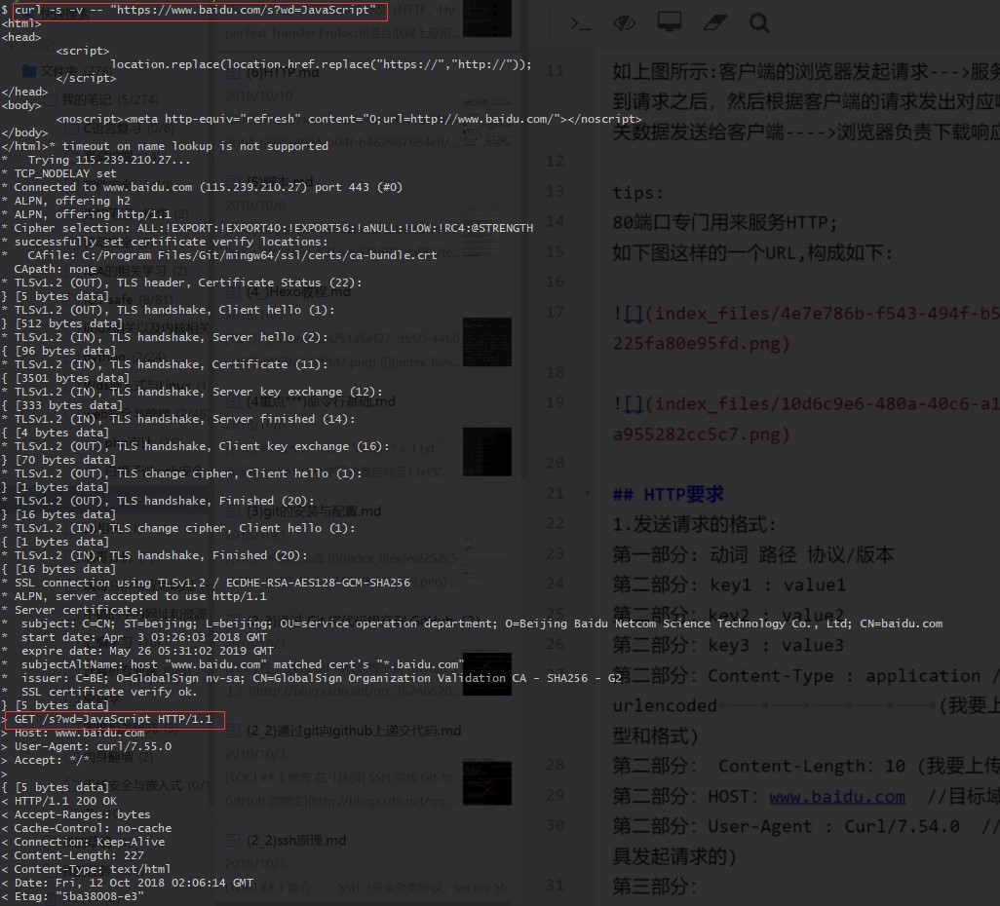
curl -s -v -- "https://www.baidu.com/s?wd=JavaScript"GET和协议之间的就是路径,包含查询字符串的;
测试3：
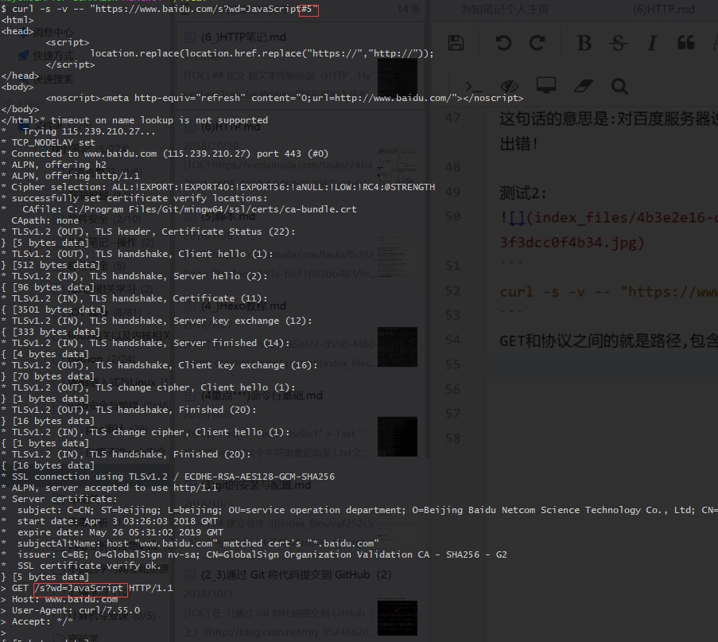
服务器是不看路径的；如上图
测试4:
如果你不写路径,默认为/
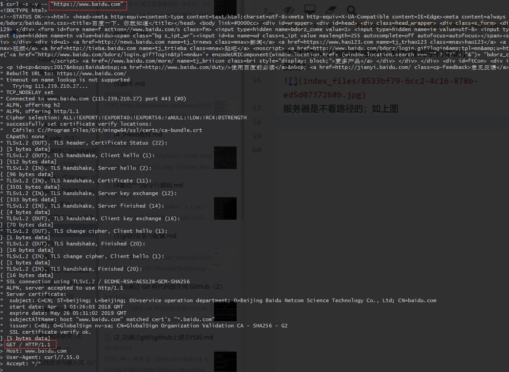
Content-Type : application / x-www-form-urlencoded:
这里的application表示一个应用数据;
x-www-form-urlencoded：x表示这是一个实验属性，没有被写入规范的属性!form表单;urlencoded以urlencoded的形式给其压缩;
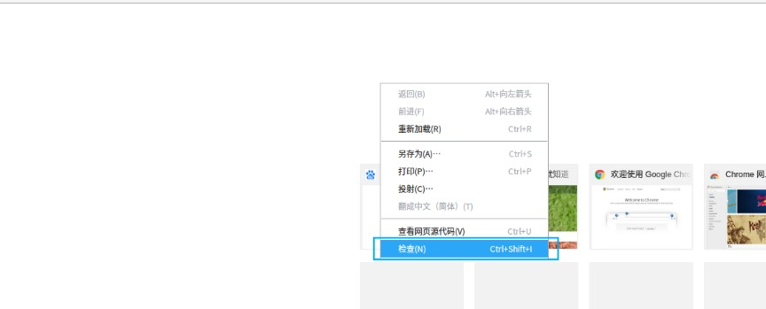
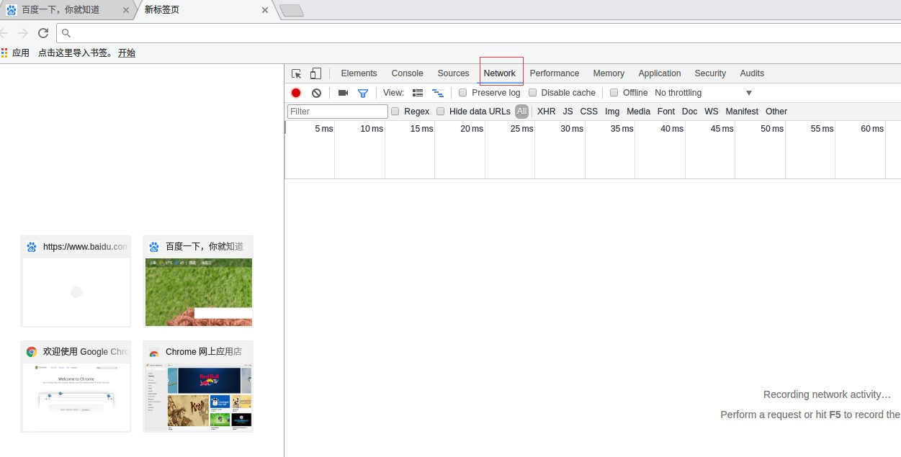
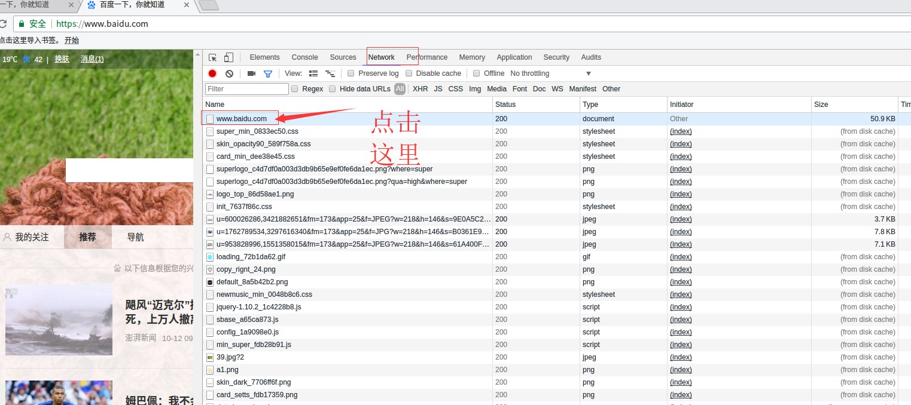
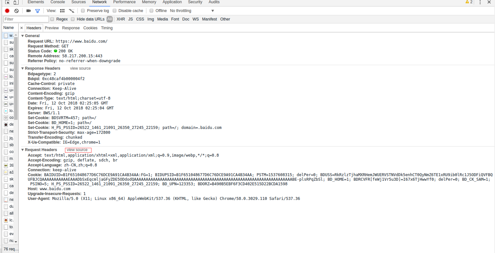
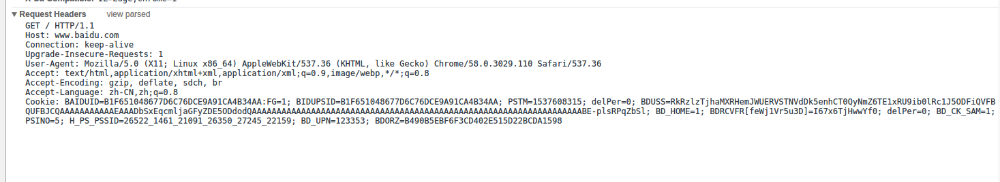
可以看到http的请求;
下面看一个post的请求:
要在Preserve Log这里打钩:
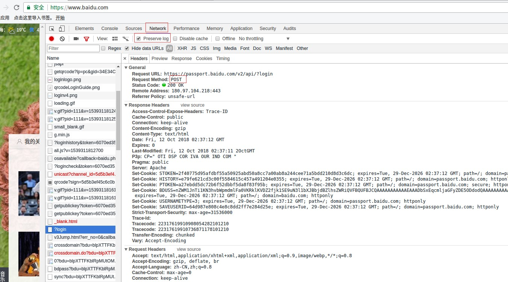
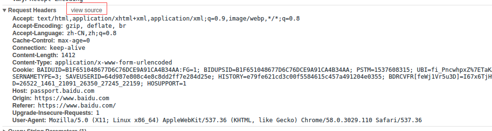
可以看到自己的用户名和密码:
由于这里是https协议,all数据在网络上传输的时候是需要加密的;
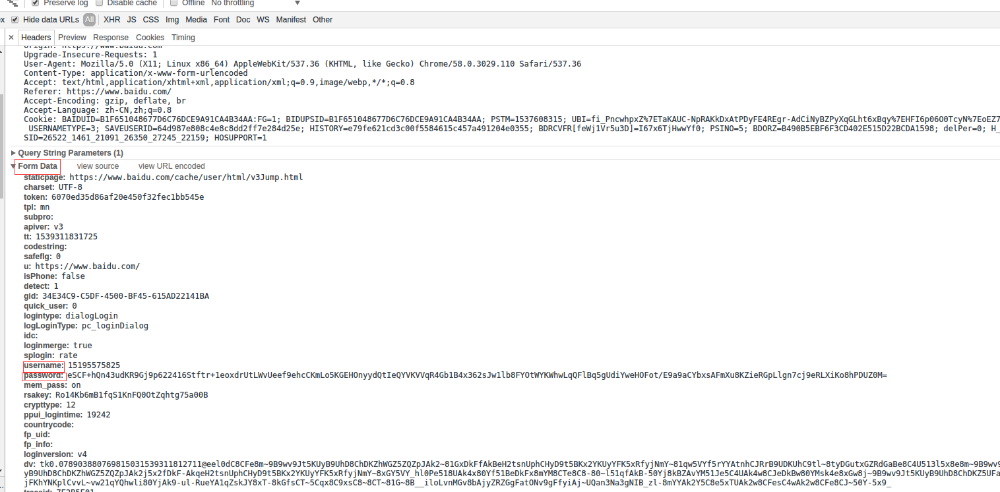
content-length和content-type需要了解一下:
我们请求的时候会带上我们的数据,返回的时候会带上百度的数据(响应的格式，这里为文本,以及响应的长度);
server:指的是百度的一个前端服务器(在百度那里的,不是我们这里,这是它为了方便调试的,比如说哪一台出错了,就可以调试哪一台);
第三部分也是回车，就是图里面空的那一行;
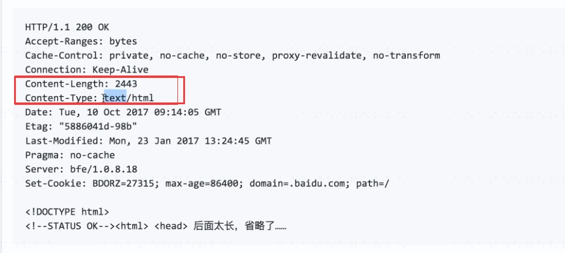
理论上来说百度首页是不接受post的;
1.协议/版本号 状态码 状态解释
2.key1: value1
2.key2: value2
2.Content-Length:17931
2.Content-Type:text/html
3.
4.要下载的内容
状态码:需要记忆，是服务器对浏览器要说的话:
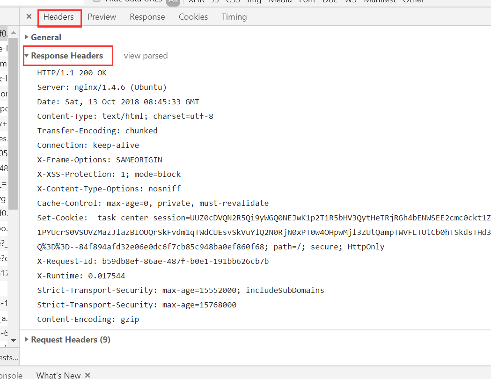
响应部分的第一部分和第二部分在Headers里面；
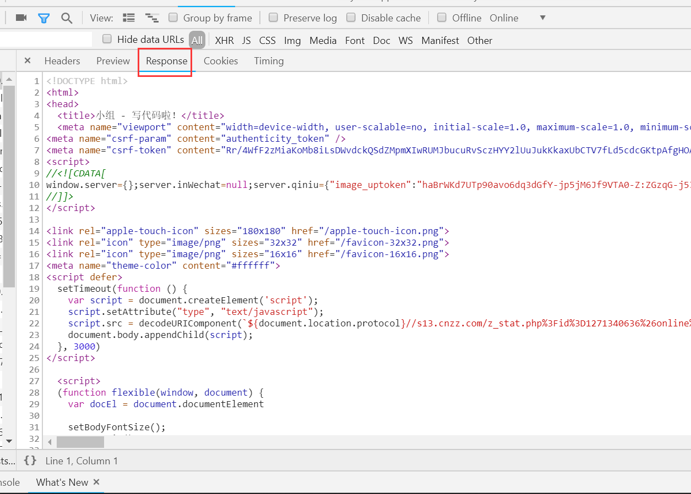
第四部分在response里面;